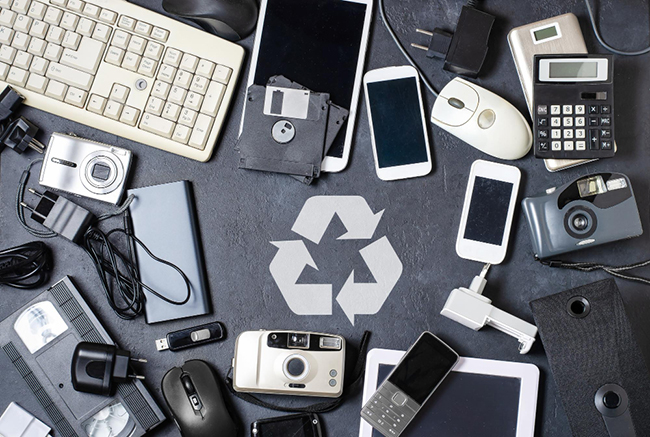

CINQ CONSEILS POUR
ENTRETENIR VOTRE ORDINATEUR
L'entretien régulier de votre ordinateur est essentiel pour assurer son bon fonctionnement et prolonger sa durée de vie tout en minimisant l'impact sur l'environnement.
Conseil N°1 : régulièrement la poussière !
La poussière peut s'accumuler à l'intérieur de votre ordinateur, obstruant les ventilateurs et les dissipateurs thermiques. Cela peut entraîner une surchauffe et des performances réduites. Pensez à nettoyer l'intérieur de votre ordinateur avec de l'air comprimé ou un aspirateur à air doux.

Conseil N°2 : Mettez à jour vos logiciels !
Assurez-vous que votre système d'exploitation (Windows, MacOS, ou Linux) est à jour, ainsi que vos pilotes et vos logiciels. Les mises à jour incluent souvent des correctifs utiles pour la sécurité et des améliorations des performances.
Conseil N°3 : Utilisez un logiciel antivirus et antimalware !
Protégez votre ordinateur contre les virus, les logiciels malveillants et les programmes malveillants en installant un logiciel antivirus et antimalware fiable. Assurez-vous de mettre à jour régulièrement sa base de données de signatures. Attention aux faux antivirus très fréquents sur internet ! Consultez-nous pour bien choisir votre protection.
Conseil N°4 : Gérez votre espace de stockage !
Veillez à ne pas saturer votre disque dur. Il faut toujours gardez suffisamment d'espace libre pour que le système d'exploitation puisse fonctionner correctement. Supprimez régulièrement les fichiers qui vous paraissent inutiles.

Conseil N°5 : Sauvegardez vos données et recyclez votre matériel !
Il fait suite à notre conseil N°4. Effectuez des sauvegardes régulières de vos données
importantes. Utilisez des solutions de sauvegarde automatique, cela vous assura une
régularité.
Pour cela utilisez des disques durs externes ou mieux encore… des services de stockage en
ligne, pour éviter tout risque de perte de données en cas de panne matérielle ou de problème
logiciel. De plus, lorsque vous décidez de vous débarrasser de vieux ordinateurs,
assurez-vous de les recycler de manière responsable pour réduire votre impact
environnemental. Si les données de vos disques durs sont sensibles confiez les à un
professionnel qui vous garantira une garantie de destruction.
En suivant ces conseils, vous pouvez maintenir votre ordinateur en bon état de
fonctionnement, protéger vos données et contribuer à la préservation de l'environnement
en recyclant correctement le matériel informatique obsolète.
